BLE
总览
本示例主要介绍如何使用ble。
使用步骤
进入
customer_app/bl602_demo_event或customer_app/bl702_demo_event工程中，BL602用脚本genromap编译，BL702用脚本genblestd编译，完成后下载Bin文件；BL602使用
stack_ble命令初始化ble，打印的部分log如下，BL702不需要输入该命令。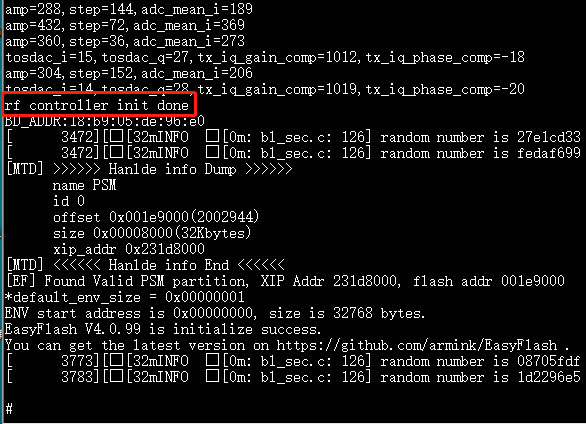依次使用
ble_init、ble_auth进行相关的初始化；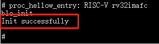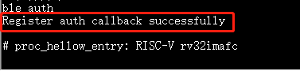使用
ble_start_adv 0 0 0x80 0x80命令开启ble。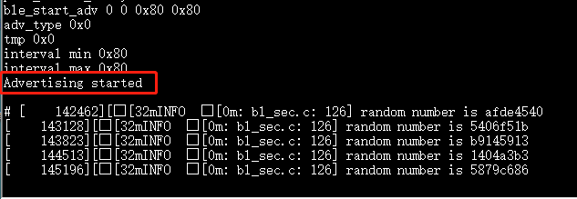用户可以通过手机app
BLE调试助手scan附近的蓝牙，找到我们的设备并连接。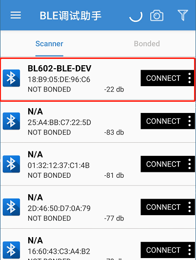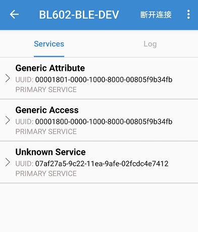使用
ble_conn_update 0x6 0x6 0x0 0x1f4更新连接参数。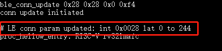SMP配对过程，由于security level不同，调用的命令也不相同，下面介绍level为2或者3的情况
连接成功后使用
ble_security 2进行SMP过程。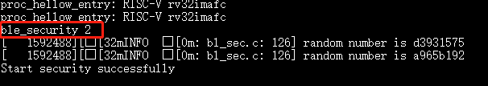
在串口打印出
Confirm passkey for xx:xx:xx:xx:xx:xx (public)：xxxxxx,输入ble_auth_passkey_confirm命令进行配对回复，打印的部分log如下。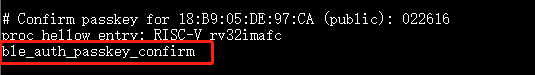在串口打印出
Bonded with xx:xx:xx:xx:xx:xx (public),表明SMP配对成功。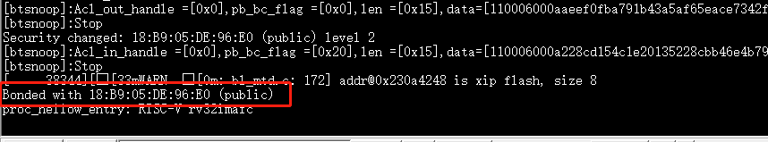连接成功后使用
ble_security 3进行SMP过程。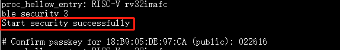
在串口打印出
Confirm passkey for xx:xx:xx:xx:xx:xx (public)：xxxxxx,输入ble_auth_passkey_confirm命令进行配对回复，打印的部分log如下。在串口打印出
Bonded with xx:xx:xx:xx:xx:xx (public),表明SMP配对成功。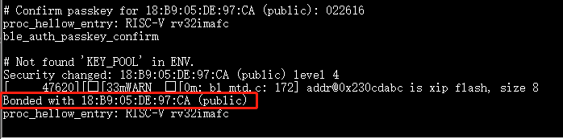
OTA使用流程
第一步：安装APP
- 下载 Bouffalo Lab BLE general apk (目前仅支持安卓系统)并安装；
第二步：下载使能OAD服务的固件
以工程bl702_demo_event为例，编译脚本为
genblestd，使能OAD服务CONFIG_BT_OAD_SERVER=1，使能后的编译参数为make CONFIG_BT=1 CONFIG_BLECONTROLLER_LIB=std CONFIG_BT_OAD_SERVER=1 -j；通过该参数编译生成带有OAD服务的Bin文件；并将该文件下载至BL702板子上；通过串口，输入以下命令发ADV；
ble_init
ble_start_adv 0 0 0xa0 0xa0第三步：生成OTA文件
同样以工程bl702_demo_event为例，在cli.c文件中的version_cmd函数添加打印信息，用来测试OTA升级成功；编译参数同样为
make CONFIG_BT=1 CONFIG_BLECONTROLLER_LIB=std CONFIG_BT_OAD_SERVER=1 -j，编译生成Bin文件；
打开Dev Cube下载工具，选择相应的参数，其中Firmware Bin选择为需要OTA升级的文件；本例选择上一步添加打印信息的Bin文件，Partition Table选择1M flash对应的文件
partition_cfg_1M.toml，Factory Params选择bl_factory_params_IoTKitA_32M.dts, 然后点击Creat & Download选项，（该步骤目的是create OTA镜像，不做实际download，不需要连接硬件板子，download失败提示可忽略）；查看log中有提示FW OTA bin is Done与FW OTA xz is Done,则生成对应的OTA文件成功；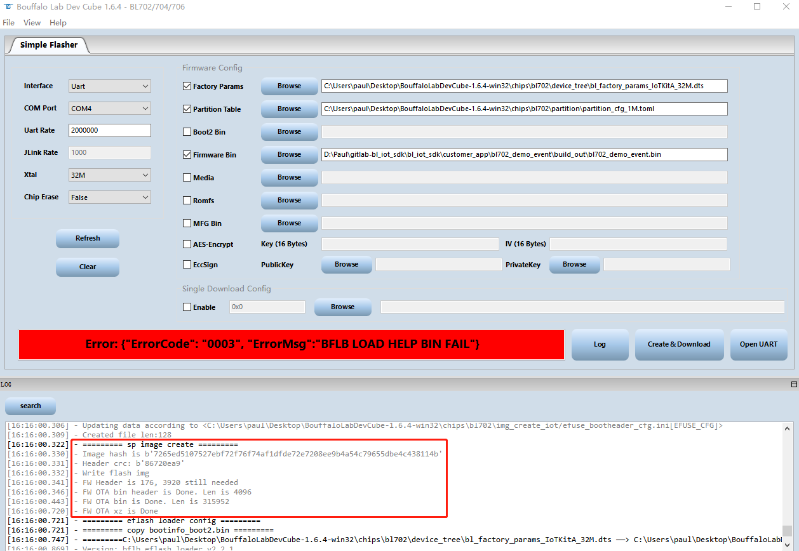在Dev cube的文件目录下找到生成的OTA文件；其中
FW_OTA.bin.hash为不带压缩文件；FW_OTA.bin.xz.hash为带压缩文件；本例以FW_OTA.bin.xz.hash进行OTA升级，将其拷贝至手机中；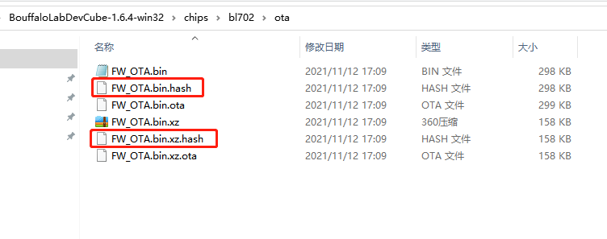第四步：OTA升级
打开 APP 进行设置选择相应的服务，并 scan 设备（默认开启自动 scan）；
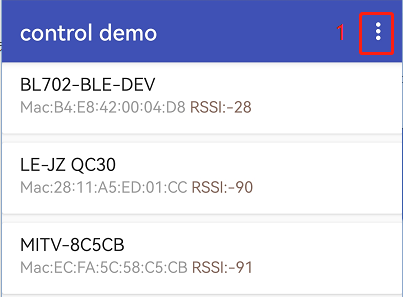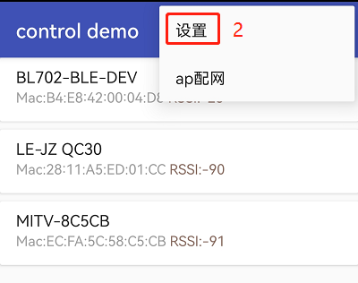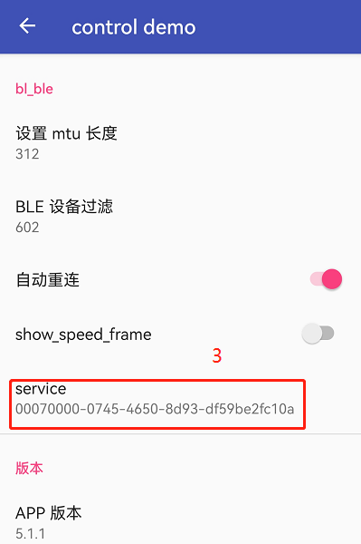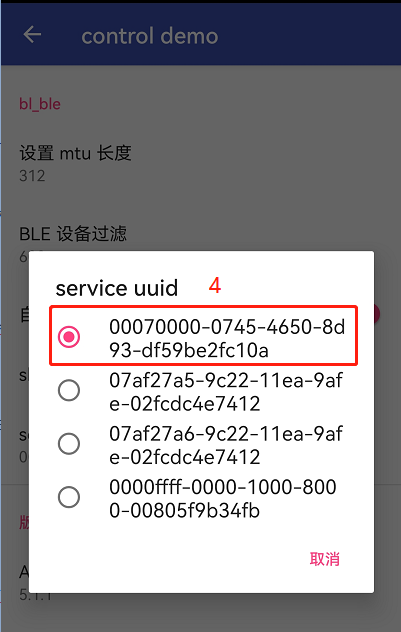选择 scan 到的设备并连接，设备名为
BL702-BLE-DEV；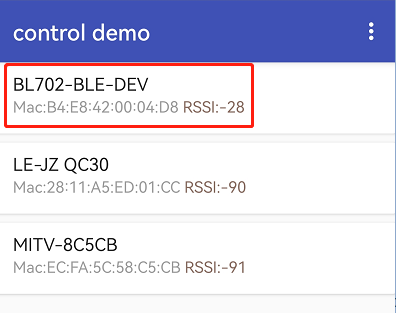在 APP 中选择
设备升级选项；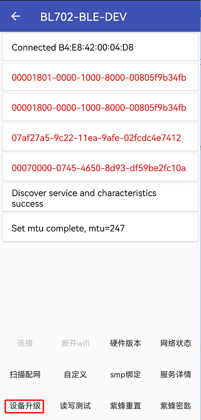在文件目录里面选择需要升级的文件
FW_OTA.bin.xz.hash；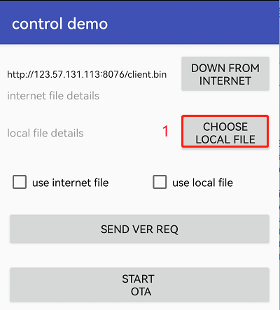
在APP中点击
SEND VER REQ选项发送版本请求，用来获取当前Bin文件的相关信息；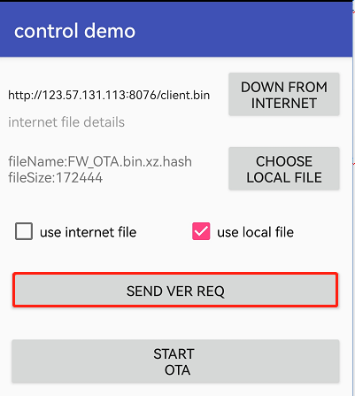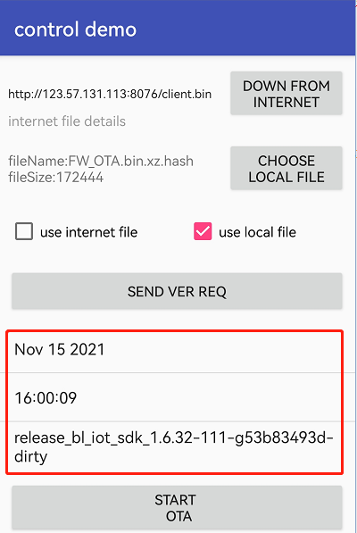在APP中点击
START OTA选项进行升级；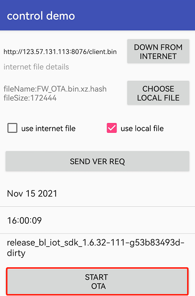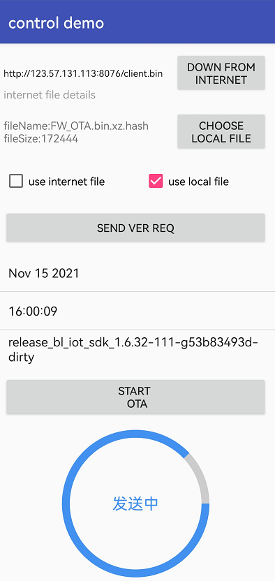BL702设备进行复位，然后在串口中输入命令
sysver,并且在串口log中查找到添加的打印信息，说明OTA升级成功；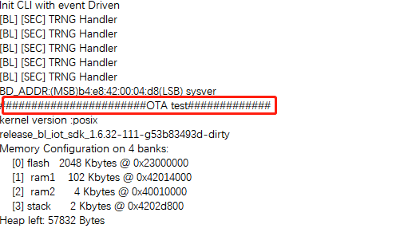
Cli命令介绍
ble_init
命令功能：ble通用初始化，在所有ble cli操作前，需要先输入该命令
参数：无
示例：输入命令
ble_init
ble_auth
命令功能：注册SMP接口函数
参数：无
示例：输入命令
ble_auth
ble_unpair
- 命令功能：清除配对key
- 第一个参数表示设备地址类型
- 0：设备表示public地址类型
- 1：表示设备地址为random类型
- 2：表示设备地址为可解析的地址或者Public地址
- 3：表示设备地址为可解析的地址或者random地址
第二个参数代表设备地址，高字节在前低字节在后，如果为0，代表清除所有设备的key
示例：输入命令
ble_unpair 0 0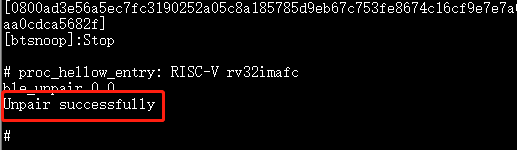
ble_start_adv
- 命令功能表示：开启广播
- 第一个参数表示广播类型
- 0：adv_ind 可连接可被扫描;
- 1：adv_scan_ind 不可被连接可被扫描;
- 2：adv_nonconn_ind 不可被连接不可被扫描;
- 3：adv_direct_ind 可被指定的设备连接不可被扫描
- 第二个参数表示广播模式
- 0：General discoverable;
- 1：non discoverable;
- 2：limit discoverable;
第三个参数表示广播间隙最小值,其计算方式为 0.625ms * N,范围应在20 ms to 10.24 s之间
第四个参数表示广播间隙最大值,其计算方式为 0.625ms * N,范围应在20 ms to 10.24 s之间
示例：输入命令
ble_start_adv 0 0 0x80 0x80
ble_stop_adv
命令功能：停止ADV广播
参数：无
示例：输入命令
ble_stop_adv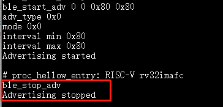
ble_start_scan
- 命令功能：表示扫描广播设备
- 第一个参数表示扫描类型
- 0：表示scan passive type只监听广播数据
- 1：表示scan active,不仅监听当满足条件还会发scan_req包
- 第二个参数表示过滤设备广播包
- 0：表示不启用重复过滤
- 1：表示启用重复过滤
- 2：仅仅接收白名单列表发起的广播和scan response包，除了指定连接地址不是自己的adv_direct_ind广播包
- 4：使用扩展过滤策略，过滤设备
第三个参数表示扫描间隙,其计算方式为 0.625ms * N,范围在2.5 ms to 10.24 s之间,其应该大于等于扫描窗口
第四个参数表示扫描窗口,其计算方式为 0.625ms * N,范围在2.5 ms to 10.24 s之间,其应该小于等于扫描间隙
示例：输入命令
ble_start_scan 0 0 0x80 0x40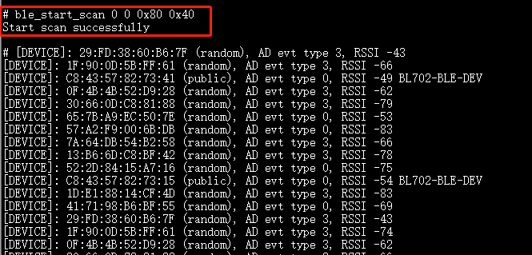
ble_stop_scan
命令功能：停止扫描
参数：无
示例：系统进入SCAN后，输入命令
ble_stop_scan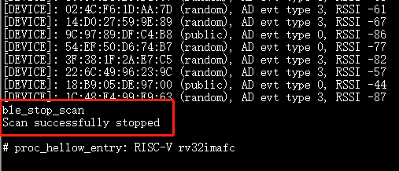
ble_conn_update
命令功能：表示更新连接参数
第一个参数表示连接间隙的最小值,其计算方式为 N * 1.25 ms,其范围在7.5 ms to 4 s
第二个参数表示连接间隙的最大值,其计算方式为 N * 1.25 ms,其范围在7.5 ms to 4 s
第三个参数表示从设备时延多少个连接事件范围是0~499,比如：该值设置为1，表明延时一个事件的时间进行数据交互，作用是降低交互频率更省电
第四个参数表示连接超时时间，计算方式 N * 10 ms,范围是100 ms to 32 s
示例：连接成功后，输入命令
ble_conn_update 0x28 0x28 0x0 0xf4
ble_security
- 命令功能：设置SMP的加密等级
- 第一个参数表示加密等级，总共有5个等级
0：仅用于BR/EDR，比如SDP服务;
1：表示不需要加密不需要认证的过程;
2：表示需要加密不需要认证的过程
3：表示需要加密和认证，比如双方需要输入PIN码
4：表示需要加密和认证，通过128bit的key
示例：连接成功后，输入命令
ble_security 2
ble_get_device_name
命令功能：获取本地设备名称
参数：无
示例：输入命令
ble_get_device_name
ble_set_device_name
命令功能：设置本地设备名称
参数：需要设置的设备名字
参数：无
示例：输入命令
ble_set_device_name bl602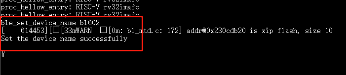
ble_read_local_address
命令功能：读取本地设备地址
参数：无
示例：输入命令
ble_read_local_address
ble_set_adv_channel
命令功能：设置ADV通道
参数：需要设定的ADV通道数，其值范围为1-7，参数大小为1byte，bit0代表通道37，bit1代表通道38，bit2代表通道39
示例：输入命令
ble_set_adv_channel 4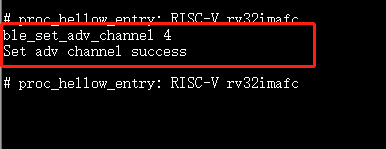
ble_connect
- 命令功能：连接指定地址的设备
- 第一个参数表示设备地址类型
- 0：设备表示public地址类型
- 1：表示设备地址为random类型
- 2：表示设备地址为可解析的地址或者Public地址
- 3：表示设备地址为可解析的地址或者random地址
第二个参数代表设备地址，高字节在前低字节在后
示例：输入命令
ble_connect 0 18B905DE96E0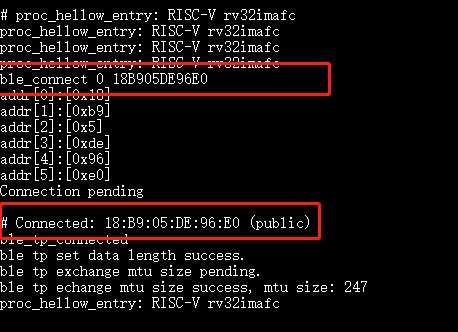
ble_disconnect
- 命令功能：断开指定地址的设备的连接
- 第一个参数表示设备地址类型
- 0：设备表示public地址类型
- 1：表示设备地址为random类型
- 2：表示设备地址为可解析的地址或者Public地址
- 3：表示设备地址为可解析的地址或者random地址
第二个参数代表设备地址，高字节在前低字节在后
示例：连接成功后，输入命令
ble_disconnect 0 18B905DE96E0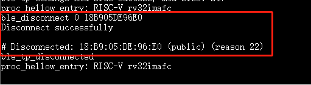
ble_select_conn
- 命令功能：多个连接中，将某一个连接对象设置为当前连接对象
- 第一个参数表示设备地址类型
- 0：设备表示public地址类型
- 1：表示设备地址为random类型
- 2：表示设备地址为可解析的地址或者Public地址
- 3：表示设备地址为可解析的地址或者random地址
第二个参数代表设备地址，高字节在前低字节在后
示例：多个设备连接成功后，输入命令
ble_select_conn 1 5F10546C8D83，将选定的连接对象设置为当前连接对象，后续的ble_read等操作将会作用在该连接上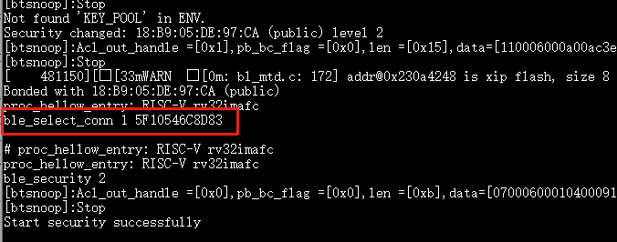
ble_auth_cancel
命令功能：取消加密认证过程
参数：无
示例：当在SMP过程中，输入命令
ble_auth_cancel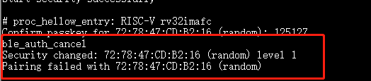
ble_auth_passkey_confirm
命令功能：接收到passkey后回复远端，并且对端设备在配对过程中也有显示该passkey； 例如：配对过程本地打印 Confirm passkey for 48:95:E6:73:1C:1A (random): 745491 ；可发送该函数进行回复
参数：无
示例：当在SMP过程中，对应security level为3，需要输入命令
ble_auth_passkey_confirm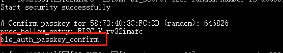
ble_auth_pairing_confirm
命令功能：接收到远端配对请求，用此函数回复远端配对请求，例如：配对过程本地打印 Confirm pairing for 00:1B:DC:F2:20:E9 (public) ；可发送该函数进行回复
参数：无
示例：当在SMP过程中，对应的security level为2，输入命令
ble_auth_pairing_confirm，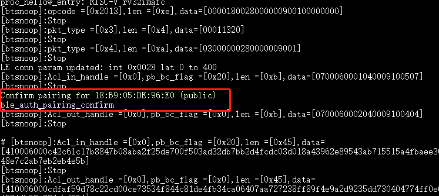
ble_auth_passkey
命令功能：请求输入passkey
参数：passkey值，其范围为0-999999
示例：当用ble_security 3命令进行配对，且SMP配对方法为PASSKEY_INPUT（代码中实现方法：用ble_auth注册smp接口函数时，在数据结构bt_conn_auth_cb中将函数passkey_entry填充，passkey_display与passkey_confirm不填充，其它接口函数默认即可），串口将打印出Enter passkey for XX:XX:XX:XX:XX:XX (public)，此时输入命令
ble_auth_passkey 111111完成配对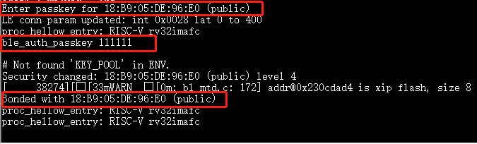
ble_exchange_mtu
命令功能：交换mtu大小
参数： 无
示例：连接成功后，输入命令
ble_exchange_mtu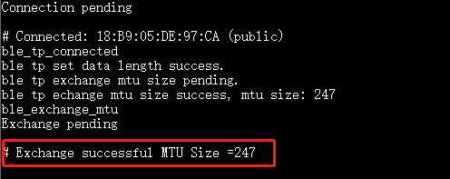
ble_discover
- 命令功能：查询指定的服务或特性
- 第一个参数表示需要查询的类型
- 0：primary
- 1：secondary
- 2：include
- 3：Characteristic
- 4：Descriptor
第二个参数表示2BYTES的uuid
第三个参数表示起始句柄，占2BYTES
第四个参数表示结束句柄，占2BYTES
示例：连接成功后，输入命令
ble_discover 0 0x1800 0x1 0xffff
ble_read
命令功能：读取指定句柄的数据
第一个参数表示句柄
第二个参数表示偏移量
示例：连接成功后，输入命令
ble_read 0x5 0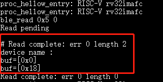
ble_write
命令功能：指定句柄写入相应的数据
第一个参数表示句柄，占2bytes
第二个参数表示偏移量，占2bytes
第三个参数表示数据长度，占2bytes,最大不超过512
第四个参数表示需要写入的数据
示例：连接成功后，写入2个字节的数据，命令为
ble_write 0xf 0 2 0102,其中01为一个byte，02为一个byte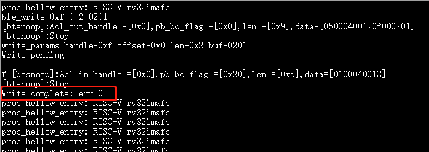
ble_write_without_rsp
- 命令功能：指定句柄写入相应的数据并且不需要回复
- 第一参数表示是否启动sign write命令
- 0：不使能sign write命令
- 1：使能sign write命令
第二个参数表示句柄，占2bytes，
第三个参数表示数据的长度，占2bytes，最大不超过512
第四个参数表示写入的数据
示例：连接成功后，写入2个字节的数据，命令为
ble_write_without_rsp 0 0xf 2 0102，其中01为一个byte，02为一个byte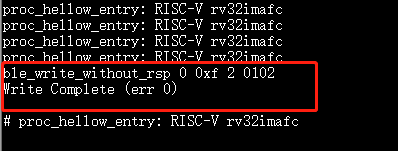
ble_subscribe
- 命令功能：订阅CCC
- 第一个参数表示CCC句柄
- 第二个参数表示订阅值的句柄
- 第三个参数表示订阅类型
- 1：表示notification
- 2：表示indication
示例：连接成功后，输入命令
ble_subscribe 0xf 0xd 0x1，表示使能CCC的notification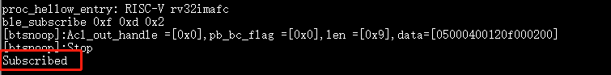
ble_unsubscribe
命令功能：取消订阅CCC
参数：无
示例：输入命令
ble_unsubscribe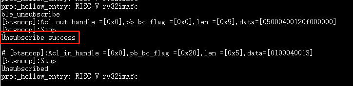
ble_set_data_len
命令功能：设置pdu数据长度
第一个参数表示有效荷载传输的最大值,范围为0x001B - 0x00FB
第二个参数表示有效荷载传输的最大时间,范围值为0x0148 - 0x4290
示例：当连接成功后，发送命令
ble_set_data_len 0xfb 0x0848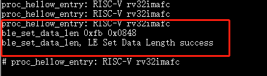
ble_conn_info
命令功能：获取所有的连接信息
参数：无
示例：当连接成功后，发送命令
ble_conn_info，获取已连接的设备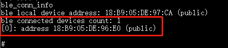
ble_disable
命令功能：注销BLE
参数：无
示例：当无scan/adv/connect事件，发送命令
ble_disable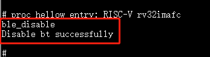
ble_set_tx_pwr
命令功能：设置发送功率
第一个参数表示设置功率值
示例：发送命令
ble_set_tx_pwr 0xa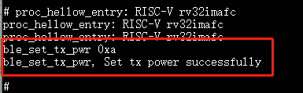